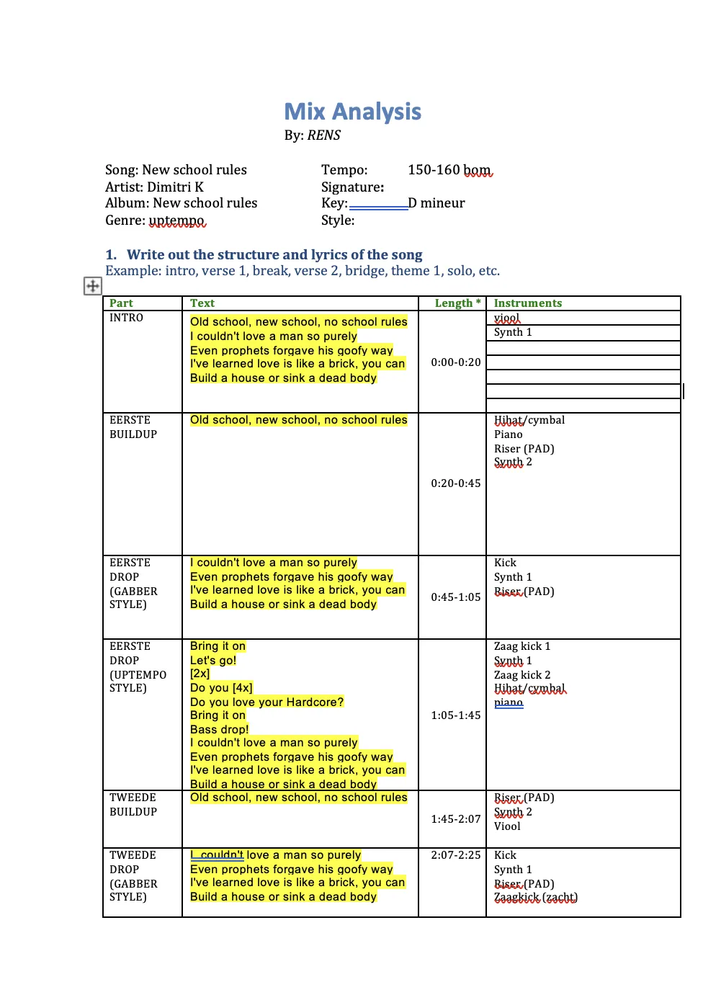
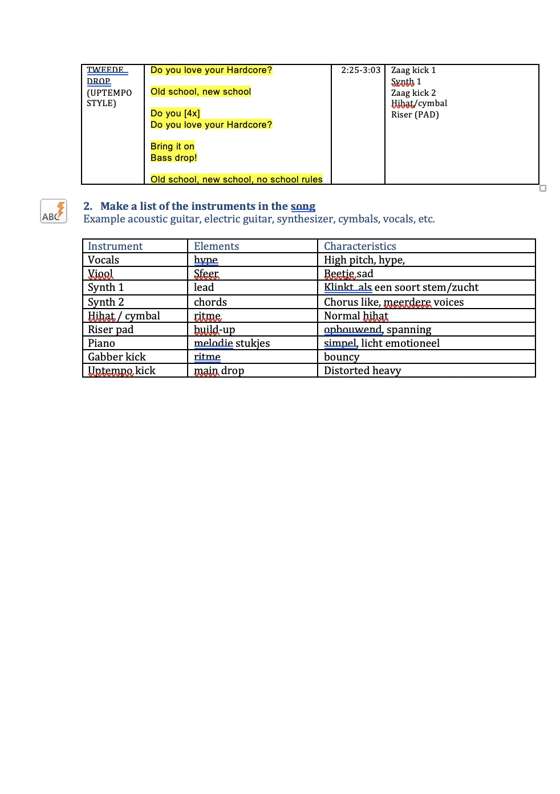
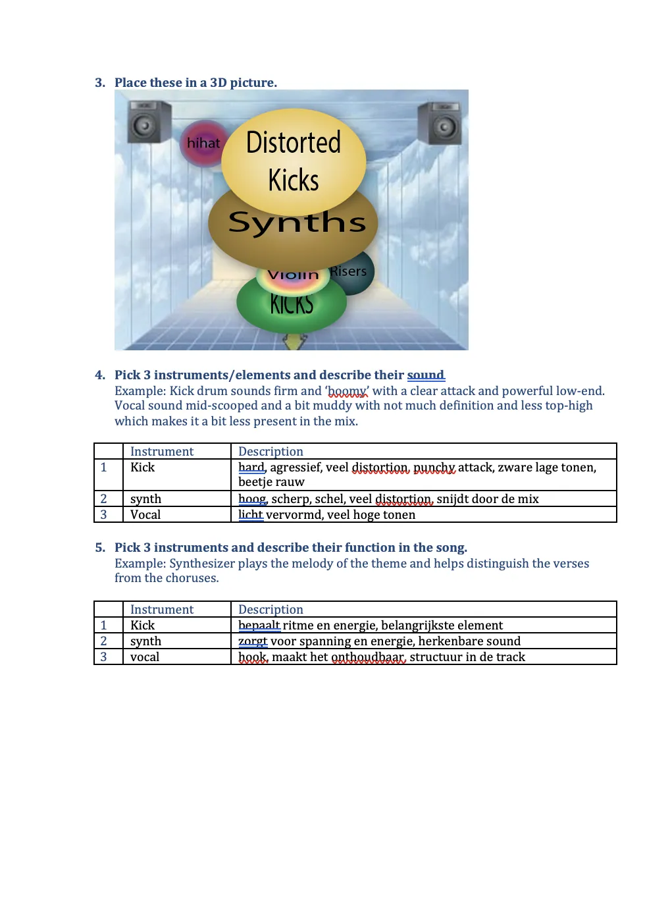

Role
Audio Designer
Timeline
4 weeks
Tools
Ableton, Vital
Type
Class Project
My own uptempo hardcore track, produced from scratch in Ableton.
Final version
Audio Designer
4 weeks
Ableton, Vital
Class Project
I started with no music production experience. Finding a melody that worked and judging my own mix were the hardest parts.
I studied the genre, analysed New School Rules by Dimitri K in class and built my own distorted kicks in Vital. After trying several melodies I switched to a simple arpeggio that gave the track its energy.
First melody
Another variation
The melody I used when moving on


